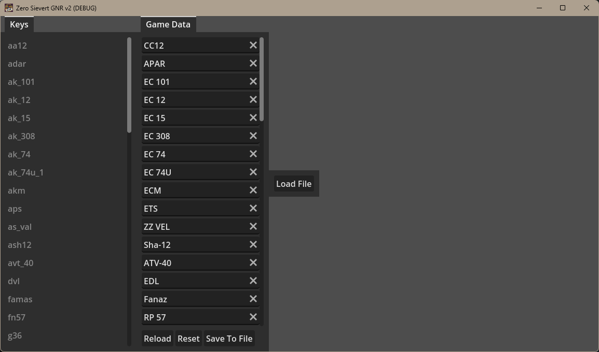

Window displaying a lift of weapon names, loaded from game data.
Standalone modding software for the video game ZERO Sievert by CABO Studio. It replaces the Display names of the weapons in the game in a non-destructive way.
Version 2 improves the user experience greatly and doesn't require the heavy upfront time investment of v1.